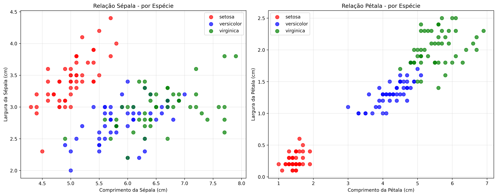

Matplotlib/Plotnine e Numba
Introdução
No ecossistema Python para ciência de dados e computação científica, duas ferramentas se destacam por abordarem desafios fundamentais em lados opostos do espectro de trabalho: a visualização de dados e a otimização de performance. Matplotlib/Plotnine e Numba representam pilares essenciais que, quando combinados, permitem desde a exploração intuitiva de conjuntos de dados complexos até a aceleração significativa de cálculos computacionalmente intensivos.
Matplotlib/Plotnine: A Linguagem Visual da Ciência de Dados
A importância do Matplotlib e sua evolução através do Plotnine reside na capacidade de transformar dados abstratos em narrativas visuais compreensíveis. Enquanto o Matplotlib estabeleceu-se como a biblioteca fundacional para visualização em Python - oferecendo controle granular sobre cada elemento gráfico - o Plotnine trouxe a elegância da gramática de gráficos do ggplot2 do R para o Python, permitindo uma construção mais intuitiva e consistente de visualizações.
Sua relevância vai além da mera geração de gráficos; estas ferramentas facilitam a descoberta de padrões, a identificação de outliers, a validação de hipóteses e a comunicação efetiva de resultados. Em um mundo onde a tomada de decisão baseada em dados tornou-se ubíqua, a capacidade de criar visualizações claras e informativas transforma-se em uma competência estratégica. Desde simples gráficos de linha até visualizações multivariadas complexas, Matplotlib e Plotnine fornecem a base sobre a qual insights são construídos e compartilhados.
Numba: Democratizando a Computação de Alto Desempenho
Se as visualizações representam a interface final do trabalho com dados, o Numba ocupa o espaço fundamental da otimização computacional que torna possível analisar conjuntos massivos de dados em tempo viável. A importância do Numba está em sua capacidade revolucionária de acelerar código Python puro através da compilação just-in-time (JIT), aproximando-se da performance de linguagens compiladas como C e Fortran, mas mantendo a simplicidade e produtividade do Python.
Sua relevância é particularmente evidente em domínios onde cálculos numéricos intensivos são frequentes: simulações científicas, processamento de sinais, algoritmos de machine learning e análise financeira. Ao permitir que pesquisadores e engenheiros escrevam código Python que executa ordens de magnitude mais rápido, frequentemente com mudanças mínimas no código existente, o Numba elimina a tradicional dicotomia entre produtividade do desenvolvedor e performance de execução.
A combinação destas ferramentas representa um paradigma poderoso: enquanto o Numba acelera o processamento e transformação de dados em escala, o Matplotlib/Plotnine proporciona os meios para interpretar e comunicar os resultados dessas análises. Esta sinergia permite ciclos iterativos mais rápidos de experimentação e refinamento, onde insights visuais podem levar a novas otimizações computacionais, que por sua vez geram novas oportunidades de visualização e compreensão.
Juntas, estas ferramentas encapsulam a dualidade moderna do trabalho com dados: a necessidade de eficiência computacional para lidar com a escala exponencial dos dados contemporâneos, e a igualmente crucial capacidade de traduzir complexidade computacional em clareza visual para tomada de decisão informada.
Plotagem em Python
Relação entre Sépalas e Pétalas
O dataset Iris contém medidas de 150 flores pertencentes a três espécies: Setosa (50 amostras), Versicolor (50 amostras), Virginica (50 amostras). Cada flor possui quatro medidas principais: Comprimento da Sépala (cm), Largura da Sépala (cm), Comprimento da Pétala (cm), Largura da Pétala (cm)
Separação por Espécie
Setosa: Apresenta pétalas significativamente menores e mais compactas.
Versicolor: Medias intermediárias em todas as dimensões
Virginica: Caracterizada por pétalas maiores e mais largas
Correlação entre Variáveis
Alta correlação positiva (≈0.96) entre comprimento e largura das pétalas
Correlação moderada (≈0.87) entre comprimento da sépala e comprimento da pétala
Baixa correlação entre largura da sépala e medidas das pétalas

Relação entre Renda e Preço
O dataset California Housing contém dados de 20.640 distritos da Califórnia com as seguintes variáveis principais:
MedInc: Renda média do distrito (unidades de $10,000)
HouseAge: Idade média das casas
AveRooms: Número médio de cômodos
AveBedrms: Número médio de quartos
Population: População do distrito
AveOccup: Ocupação média (pessoas por casa)
Latitude/Longitude: Localização geográfica
PRICE: Preço médio das casas (US$)
Numba
A utilização do Numba para aproximar o valor de π através do método de Monte Carlo representa um caso paradigmático de como a aceleração computacional pode transformar a viabilidade prática de algoritmos numéricos. Esta abordagem demonstra de forma tangível o impacto que ferramentas de otimização de performance podem ter em aplicações científicas e de engenharia.
O método de Monte Carlo para aproximação de π baseia-se em princípios probabilísticos elegantes: ao gerar pontos aleatórios uniformemente distribuídos dentro de um quadrado unitário e verificar a fração que cai dentro de um quarto de círculo inscrito, obtemos uma estimativa de π através da razão entre áreas. Contudo, a natureza estatística deste método demanda um número elevadíssimo de simulações para alcançar precisão significativa - tipicamente milhões ou até bilhões de pontos são necessários para aproximações com erros inferiores a 0.001.
É precisamente neste contexto que o Numba revela seu valor transformador. Na implementação em Python puro, cada ponto requer operações individuais de geração de números aleatórios e cálculos de distância, processadas sequencialmente pela interpretação dinâmica da linguagem. Esta abordagem, embora conceitualmente clara, torna-se computacionalmente proibitiva para simulações em grande escala, com tempos de execução que podem atingir minutos ou horas para cenários com dezenas de milhões de pontos.
A aceleração proporcionada pelo Numba vai além do mero ganho de velocidade; ela altera fundamentalmente a relação custo-benefício do método. Onde antes seriam necessários clusters computacionais ou horas de processamento para obter aproximações de alta precisão, agora um simples laptop consegue produzir resultados com 6-7 casas decimais de acurácia em questão de segundos. Esta democratização do poder computacional permite que pesquisadores e estudantes explorem conceitos estatísticos e numéricos de forma interativa e imediata.
A implementação com Numba também ilustra importantes princípios de otimização computacional. A versão “numba otimizada” que utiliza operações vetorizadas com NumPy demonstra como a combinação de técnicas - compilação JIT com operações em lote - pode produzir ganhos sinérgicos de performance. Esta abordagem híbrida aproveita as vantagens de ambas as bibliotecas: a expressividade do NumPy e a velocidade de execução do Numba.
Na prática profissional, esta capacidade de acelerar algoritmos numéricos sem abandonar o ecossistema Python representa um avanço significativo. Cientistas de dados e pesquisadores podem prototipar rapidamente em Python puro e depois otimizar seletivamente as partes computacionalmente intensivas com Numba, mantendo a produtividade do desenvolvimento enquanto alcançam performance comparável a linguagens compiladas tradicionais como C++ ou Fortran.
A aproximação de π com Monte Carlo e Numba transcende, portanto, seu objetivo matemático inicial. Vamos verificar no grafico abaixo :
Conclusão
As ferramentas de visualização como Matplotlib e Plotnine transformam dados abstratos em objetos visuais compreensíveis, permitindo que tanto técnicos quanto não-técnicos participem ativamente do processo analítico. Esta acessibilidade é crucial em ambientes corporativos onde decisões precisam ser comunicadas de forma clara para diferentes públicos.